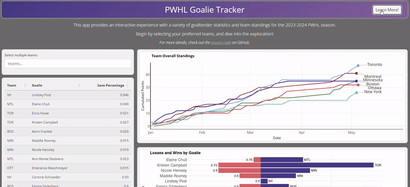

Nicole Bidwell
Data Science Specialist | Educator


Hi! I’m Nicole, a Data Science Specialist with a rewarding career in education. Obtaining a Master of Data Science from the University of British Columbia, along with a Bachelor of Science in Mathematics and Bachelor of Education from Simon Fraser University, has built my skills in data analysis, machine learning and statistical modeling. Working in education—including roles as a Senior Mathematics Teacher and Guidance Counselor—has refined my problem-solving skills and ability to communicate complex topics to diverse audiences. I now apply these skills in data science to uncover insights and facilitate data-driven decisions.
Beyond my professional pursuits, you’ll find me immersed in activities like hockey, hiking, travel, and promoting mental well-being. This website serves as a platform to share my projects and passions, offering a glimpse into how my unique experiences and interests shape my approach to data science.
Featured Work

PWHL Goalie Tracker
This fan-friendly dashboard showcases goalie statistics and team rankings for the inaugural season of the Professional Women’s Hockey League (PWHL).

Solar Savers: Solar Panel Cost-Effectiveness
A dashboard application developed collaboratively and designed to assist Canadian homeowners in making informed solar panel purchasing decisions.
Leveraging the Power of AI in Education: Insider Perspectives and Practices
An article discussing educator perspectives on AI in education, containing my insights paired with survey-based results of effective implementations and concerns.
Airbnb Analysis
This project implements machine learning models to predict listing prices based on property features. It offers insights into the key factors that drive pricing trends.
eda_mds
This package accelerates the EDA stage of machine learning projects by enhancing core EDA functions in the pandas python package. It includes four functions that deliver insights and identify potential issues in datasets.
Red Wine Quality Prediction
This project employs machine learning models to predict red wine quality, based on its physiochemical properties.
Gentrification in Vancouver: Teaching Mathematics through a Social Justice Lens
An article discussing the implementation and difficulties of teaching mathematics alongside social justice with example lesson activities.
Article (pg. 13-15)
Click to view a summary table with project details.
| Project | Description | Focus Area | Main Tools/Libraries | Completion (YYYY-MM) |
Link |
|---|---|---|---|---|---|
| Airbnb Analysis | A machine learning project predicting listing prices based on property features, offering insights into the key factors that drive Airbnb pricing trends. | Machine Learning, Regression Analysis, EDA, Feature Engineering, Model Interpretability | Python, NumPy, pandas, Altair, scikit-learn, SHAP, XGBoost, LightGBM, joblib | 2024-09 | Repo Report |
| Leveraging the Power of AI in Education: Insider Perspectives and Practices | An article discussing educator perspectives on AI in education, containing my insights paired with survey-based results of effective implementations and concerns. | AI in Education | N/A | 2024-08 | Medium Article |
| PWHL Goalie Tracker | A fan-friendly dashboard showcasing goalie statistics and team rankings for the inaugural season of the Professional Women’s Hockey League (PWHL). | Data Visualization | R, Shiny, ggplot2, dplyr | 2024-07 | Repo App |
| Solar Savers: Solar Panel Cost-Effectiveness | A dashboard application designed to assist Canadian homeowners in making informed solar panel purchasing decisions. | Data Visualization | Python, Dash, pandas, GeoPandas, Altair | 2024-04 | Repo App |
| eda_mds | A Python package that kick-starts the EDA stage of machine learning projects, enhancing pandas’ EDA functions with four functions that deliver insights and identify potential problems in the dataset. | Python Package Development, EDA | Python, pandas, GitHub Actions | 2024-02 | Repo Vingette |
| Red Wine Quality Prediction | This project aimed to create a classification model to predict red wine quality based on its physiochemical properties. The best model showed reasonable accuracy, highlighting areas for improvement in handling outliers. | Machine Learning, Classification, Unit Testing | GitHub Actions, Docker, Python, pandas, scikit-learn, matplotlib, pickle, seaborn, NumPy, Altair | 2023-12 | Repo Report |
| Gentrification in Vancouver: Teaching Mathematics through a Social Justice Lens | An article discussing the implementation and difficulties of teaching mathematics alongside social justice with example lesson activities. | Mathematics Education & Social Justice | N/A | 2017-03 | Article (pg. 13-15) |
Contact
I welcome your thoughts and insights! Whether you have questions, feedback, or have ideas for collaboration, I’m happy to connect.